library(DiffBind)library(ChIPseeker)library(GenomicFeatures)library(org.Hs.eg.db)library(clusterProfiler)library(ggimage)library(ggplot2)library(ggupset)library(ggpubr)library(biomaRt)library(tidyverse)library(STRINGdb)library(igraph)library(ggraph)library(magick)The coding gene information was downloaded from GENCODE.
The narrowPeak file can be downloaded from the download page
xxxxxxxxxxtxdb <- makeTxDbFromGFF("gencode.v43.annotation.gff3") #You can also use gtfpeak_files <- list(ctrl = "ctrl.narrowPeak", treat = "treat.narrowPeak")xxxxxxxxxxpeak_anno_List <- lapply(peak_files, annotatePeak, TxDb=txdb, tssRegion=c(-2000, 2000))xxxxxxxxxxplotDistToTSS(peak_anno_List)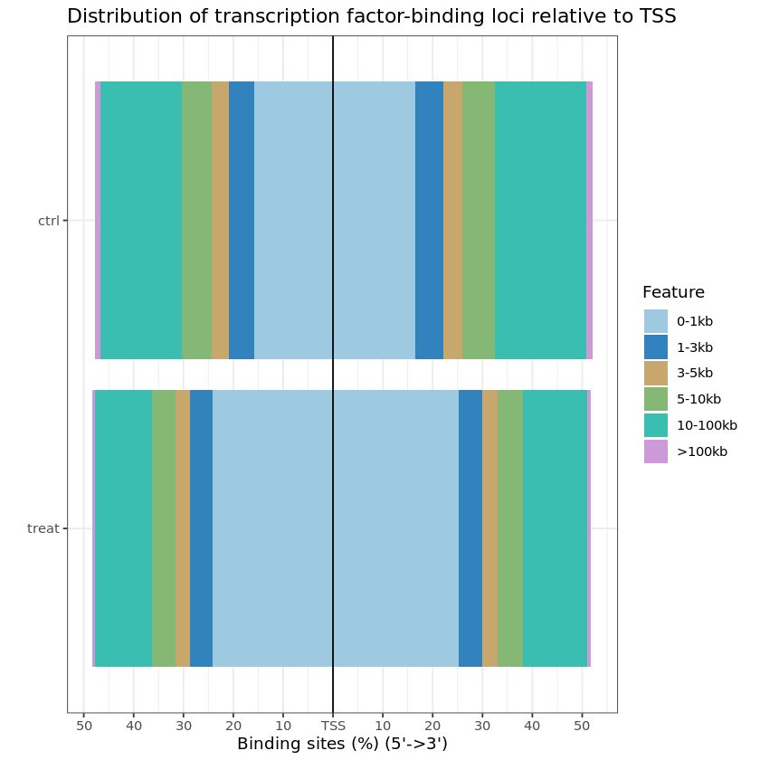
xxxxxxxxxxpeakHeatmap(peak_files, weightCol="V5", TxDb=txdb, upstream=2000, downstream=2000, color=rainbow(length(peak_files)))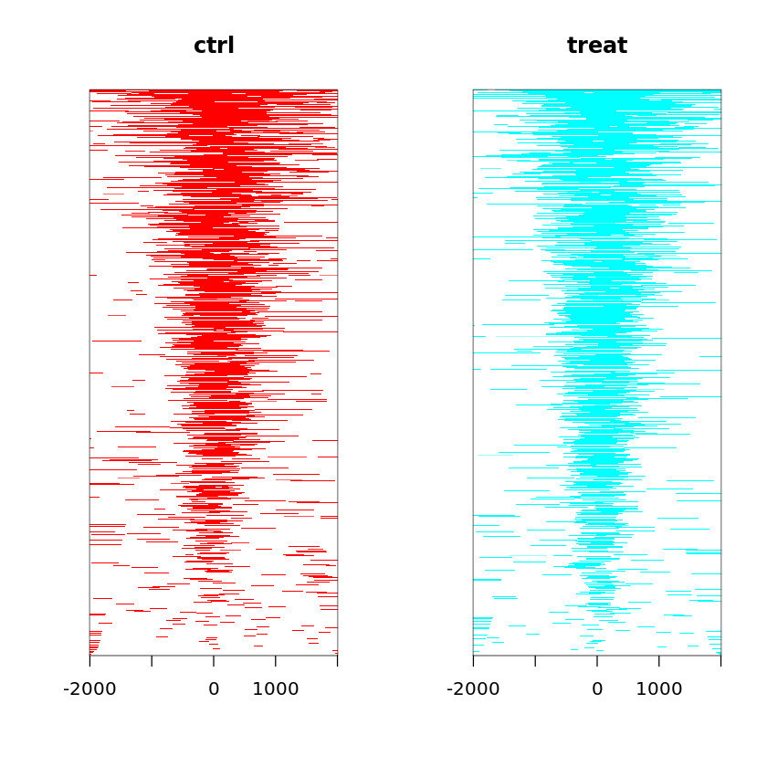
xxxxxxxxxxpromoter <- getPromoters(TxDb=txdb, upstream=1000, downstream=1000)tag_matrix_list <- lapply(peak_files, getTagMatrix, windows=promoter)plotAvgProf(tag_matrix_list, xlim=c(-1000, 1000), conf=0.95,resample=500, facet="row")
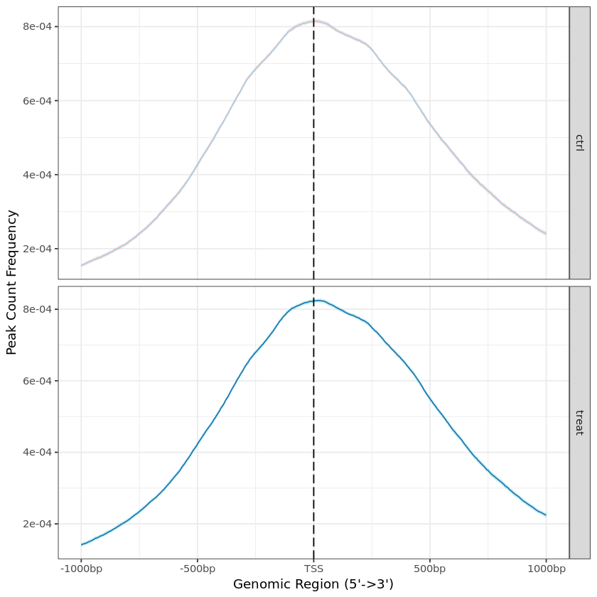
xxxxxxxxxxplotAnnoBar(peak_anno_List)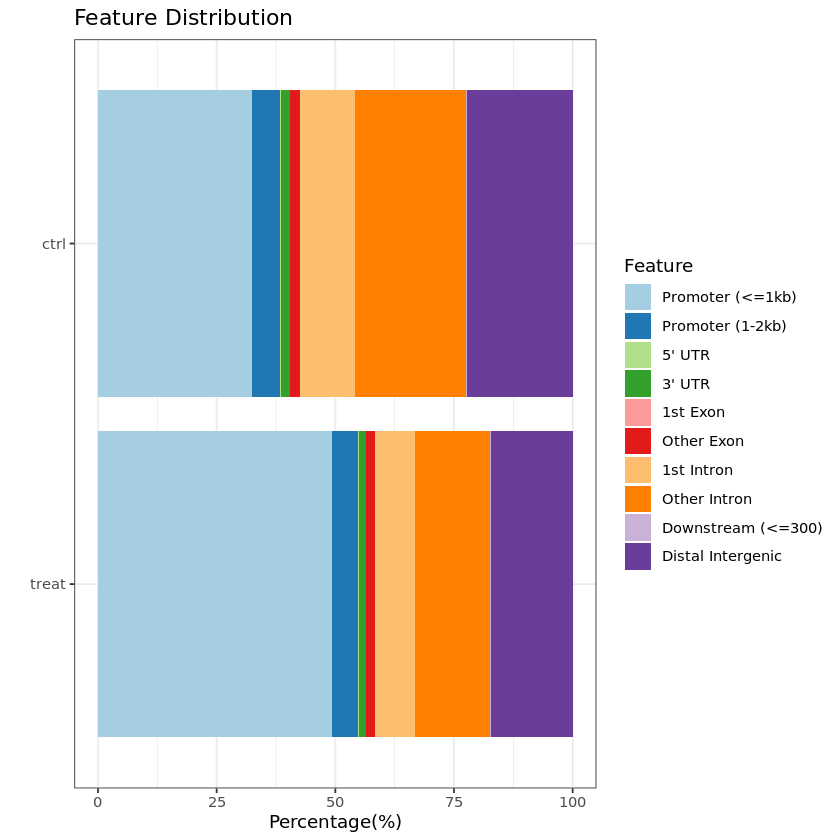
xxxxxxxxxxpie_ctrl_plot = as.ggplot(~plotAnnoPie(peak_anno_List$ctrl)) pie_treat_plot = as.ggplot(~plotAnnoPie(peak_anno_List$treat))pie_plots = ggarrange(pie_ctrl_plot,pie_treat_plot, labels = c("Ctrl", "Treat"), label.x=0.20,label.y=0.85, font.label=list(size = 19, color = "black", face = "bold", family = NULL)) ggsave(plot = pie_plots,"./plots/plotAnnoPie.png", units="in", width = 14.5, height = 7, dpi=100, device="png",bg = "white")image_read("./plots/plotAnnoPie.png")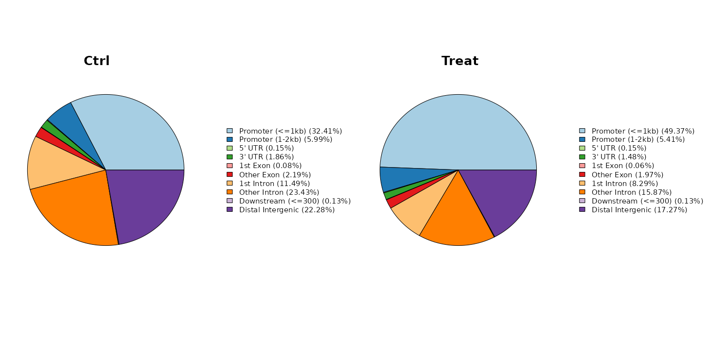
xxxxxxxxxxupset_ctrl_plot = as.ggplot(upsetplot(peak_anno_List$ctrl, vennpie=TRUE))upset_treat_plot = as.ggplot(upsetplot(peak_anno_List$treat, vennpie=TRUE))upset_plots = ggarrange(upset_ctrl_plot, upset_treat_plot,ncol = 2, labels = c("Ctrl", "Treat"), label.x=0.50, font.label=list(size = 19, color = "black", face = "bold", family = NULL)) ggsave(plot = upset_plots,"./plots/upsetplots.png", units="in", width = 18, height = 9, dpi=100, device="png",bg = "white")image_read("./plots/upsetplots.png")
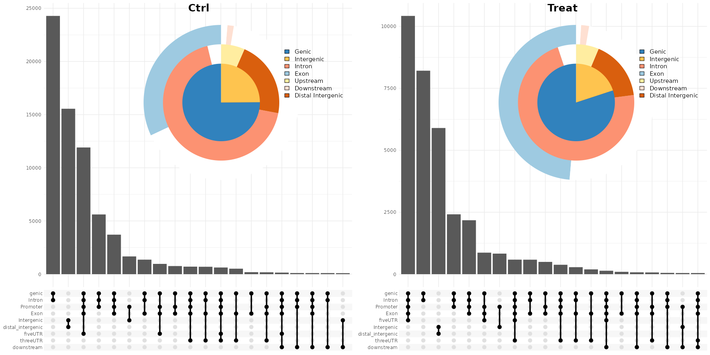
xxxxxxxxxxDBA_obj <- dba.load('DBA_obj')xxxxxxxxxxplot(DBA_obj)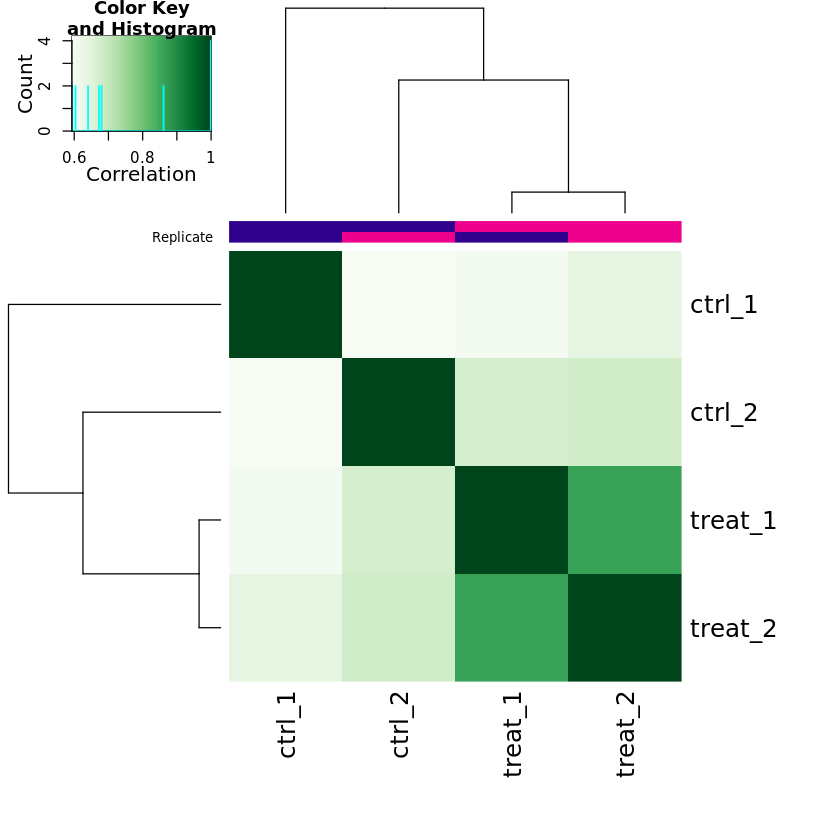
xxxxxxxxxxinfo <- dba.show(DBA_obj)libsizes <- cbind(LibReads=info$Reads, FRiP=info$FRiP, PeakReads=round(info$Reads * info$FRiP))rownames(libsizes) <- info$IDlibsizes| LibReads | FRiP | PeakReads | |
|---|---|---|---|
| ctrl_1 | 7402271 | 0.26 | 1924590 |
| ctrl_2 | 4015976 | 0.31 | 1244952 |
| treat_1 | 6631248 | 0.14 | 928375 |
| treat_2 | 6898576 | 0.16 | 1103772 |
xxxxxxxxxxDBA_obj.diff <- dba.report(DBA_obj,contrast=1)head(DBA_obj.diff)xxxxxxxxxx# GRanges object with 5 ranges and 6 metadata columns:# seqnames ranges strand | Conc Conc_treat Conc_ctrl# <Rle> <IRanges> <Rle> | <numeric> <numeric> <numeric># 2098 chr1 201887949-201889669 * | 8.59737 7.31011 9.26664# 1393 chr1 156412452-156414768 * | 8.48626 7.12360 9.17434# 2095 chr1 201769769-201771173 * | 8.17551 6.90330 8.84087# 2622 chr1 226402439-226403761 * | 7.89970 6.54545 8.58575# 1758 chr1 175672878-175674113 * | 7.67814 6.28507 8.37346# Fold p-value FDR# <numeric> <numeric> <numeric># 2098 -1.90886 7.60920e-30 1.20969e-25# 1393 -1.99523 1.10920e-29 1.20969e-25# 2095 -1.87506 4.45944e-23 3.24231e-19# 2622 -1.95896 4.98274e-21 2.71709e-17# 1758 -2.00524 6.29139e-21 2.74456e-17# -------# seqinfo: 23 sequences from an unspecified genome; no seqlengthsxxxxxxxxxxdba.plotPCA(DBA_obj, contrast=1, label=DBA_FACTOR)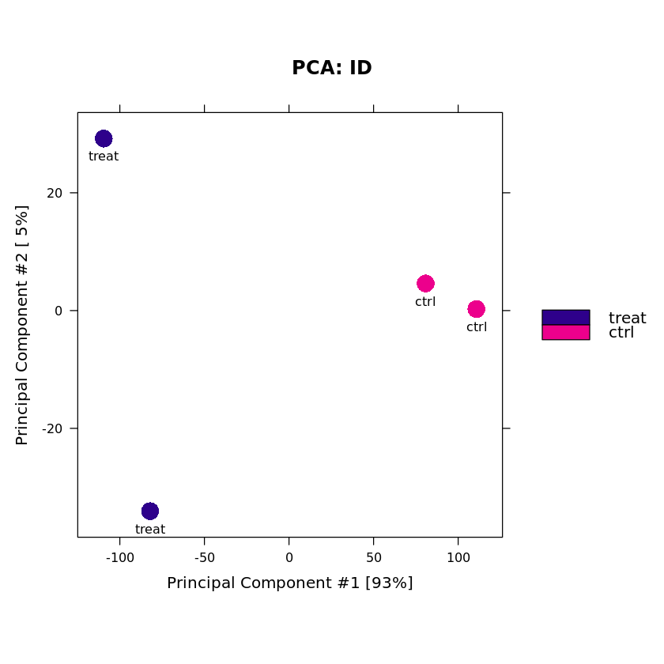
xxxxxxxxxxdba.plotMA(DBA_obj, contrast=1)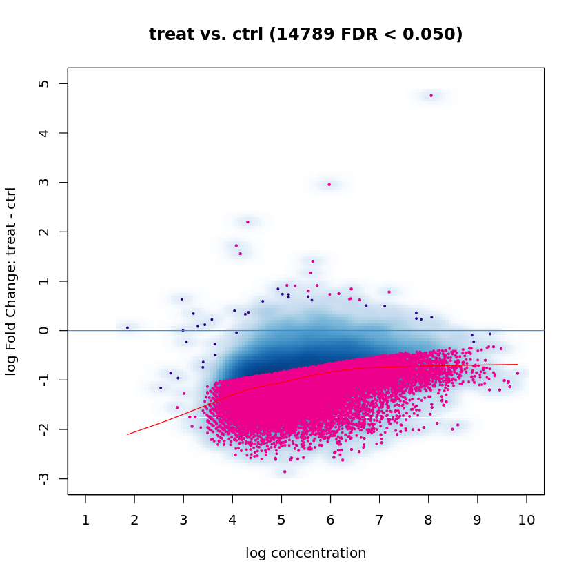
xxxxxxxxxxdba.plotVolcano(DBA_obj, contrast=1)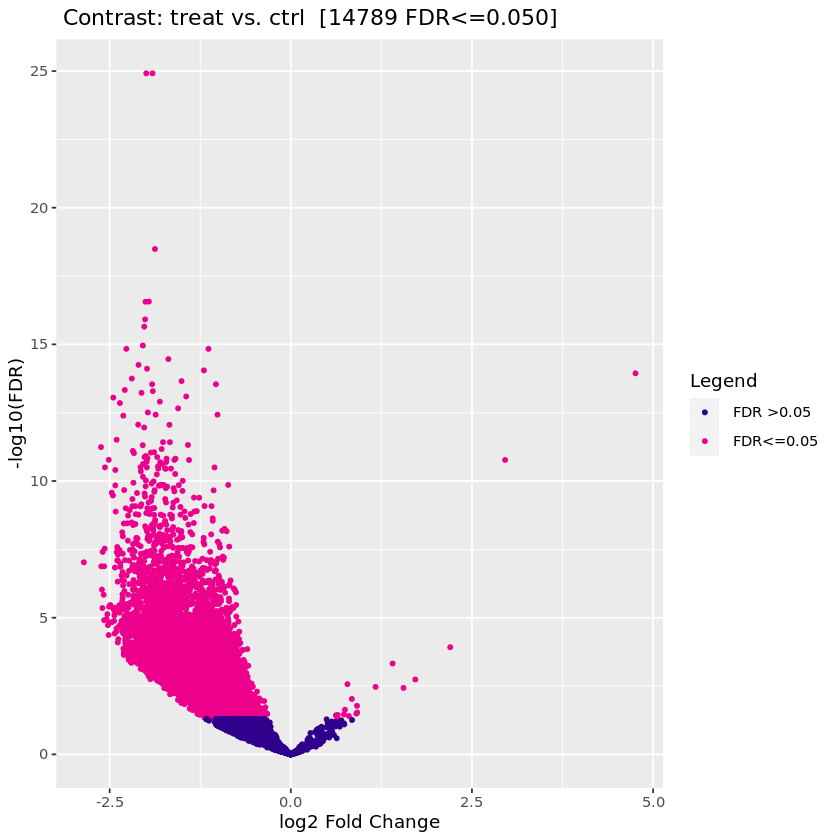
xxxxxxxxxxdba.plotBox(DBA_obj, contrast=1)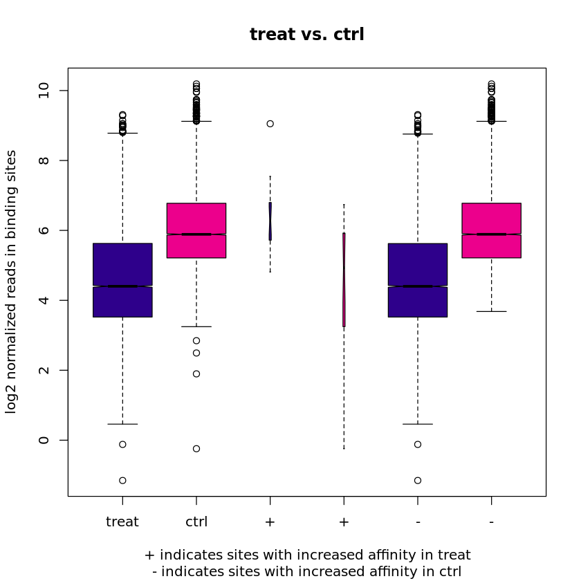
xxxxxxxxxxhmap <- colorRampPalette(c("red", "black", "green"))(n = 13)dba.plotHeatmap(DBA_obj, contrast=1, correlations=FALSE, scale="row", colScheme = hmap)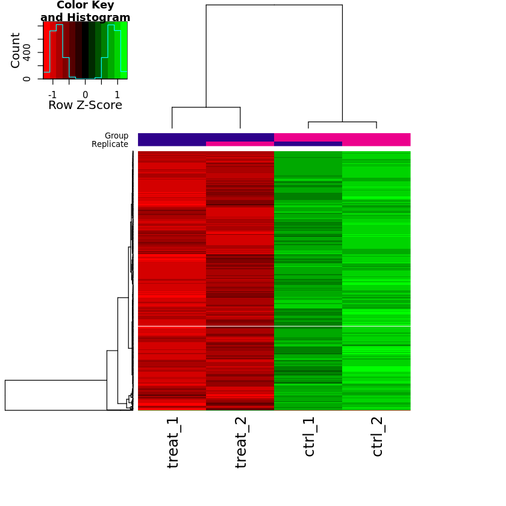
xxxxxxxxxxdiff_peak_anno <- annotatePeak(DBA_obj.diff, TxDb=txdb, tssRegion=c(-3000, 3000))df_diff_peak <- as.data.frame(diff_peak_anno)head(df_diff_peak)| seqnames | start | end | width | strand | Conc | Conc_treat | Conc_ctrl | Fold | p.value | FDR | annotation | geneChr | geneStart | geneEnd | geneLength | geneStrand | geneId | transcriptId | distanceToTSS | |
|---|---|---|---|---|---|---|---|---|---|---|---|---|---|---|---|---|---|---|---|---|
| 1 | chr1 | 201887949 | 201889669 | 1721 | * | 8.597371 | 7.310110 | 9.266644 | -1.908860 | 7.609200e-30 | 1.209694e-25 | Promoter (<=1kb) | 1 | 201888680 | 201892137 | 3458 | 1 | ENSG00000198892.7 | ENST00000464117.1 | 0 |
| 2 | chr1 | 156412452 | 156414768 | 2317 | * | 8.486264 | 7.123603 | 9.174341 | -1.995235 | 1.109200e-29 | 1.209694e-25 | Promoter (<=1kb) | 1 | 156404261 | 156412708 | 8448 | 2 | ENSG00000125462.20 | ENST00000465570.1 | 0 |
| 3 | chr1 | 201769769 | 201771173 | 1405 | * | 8.175505 | 6.903302 | 8.840873 | -1.875064 | 4.459445e-23 | 3.242314e-19 | Intron (ENST00000685211.1/ENSG00000134369.16, intron 7 of 33) | 1 | 201780523 | 201803690 | 23168 | 1 | ENSG00000134369.16 | ENST00000430015.5 | -9350 |
| 4 | chr1 | 226402439 | 226403761 | 1323 | * | 7.899704 | 6.545451 | 8.585746 | -1.958959 | 4.982736e-21 | 2.717086e-17 | Intron (ENST00000366794.10/ENSG00000143799.14, intron 1 of 22) | 1 | 226399195 | 226407982 | 8788 | 2 | ENSG00000143799.14 | ENST00000366790.4 | 4221 |
| 5 | chr1 | 175672878 | 175674113 | 1236 | * | 7.678138 | 6.285071 | 8.373460 | -2.005241 | 6.291392e-21 | 2.744557e-17 | Intron (ENST00000367674.7/ENSG00000116147.17, intron 1 of 22) | 1 | 175315194 | 175743595 | 428402 | 2 | ENSG00000116147.17 | ENST00000367674.7 | 69482 |
| 6 | chr2 | 12313520 | 12314830 | 1311 | * | 7.802349 | 6.396398 | 8.500684 | -2.010153 | 3.346117e-20 | 1.216425e-16 | Promoter (<=1kb) | 2 | 12314317 | 12702913 | 388597 | 1 | ENSG00000224184.7 | ENST00000664018.1 | 0 |
xxxxxxxxxxplotDistToTSS(diff_peak_anno)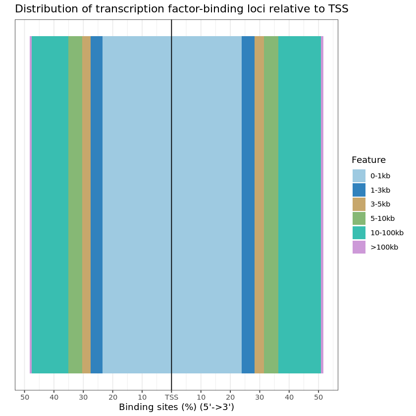
xxxxxxxxxxdiff_promoter <- getPromoters(TxDb=txdb, upstream=3000, downstream=3000)diff_tag_matrix_list <- getTagMatrix(DBA_obj.diff, windows=diff_promoter)tagHeatmap(diff_tag_matrix_list, xlim=c(-3000, 3000), color="green")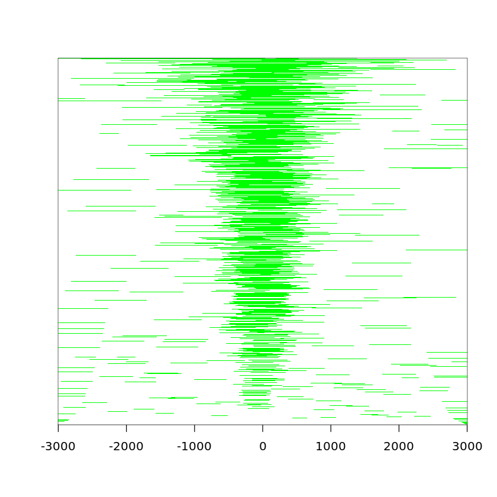
xxxxxxxxxxplotAvgProf(diff_tag_matrix_list, xlim=c(-3000, 3000), xlab="Genomic Region (5'->3')", ylab = "Read Count Frequency")
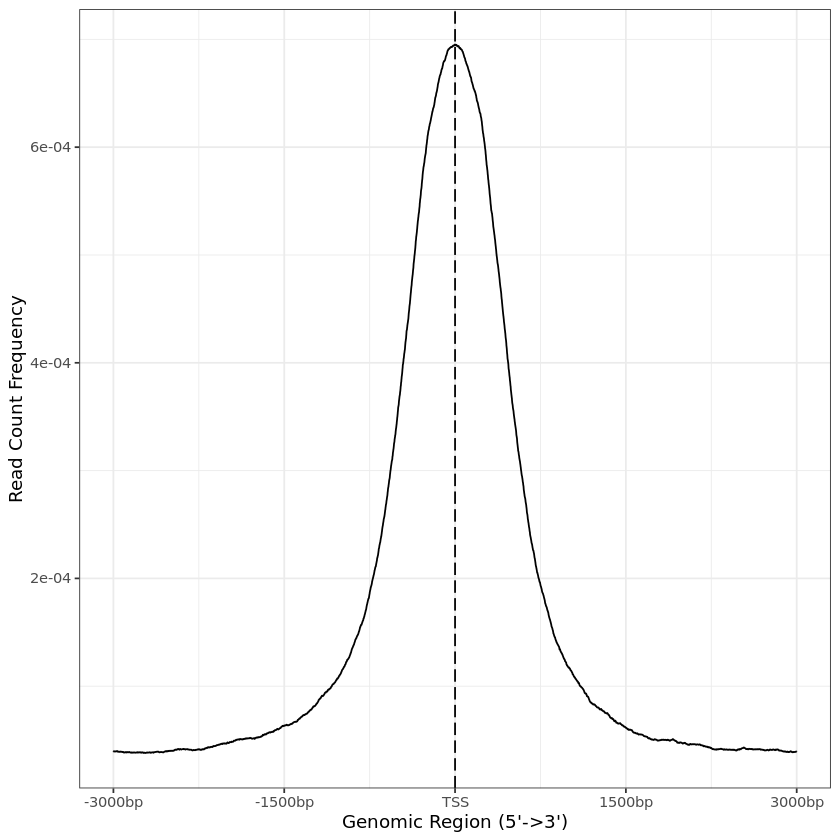
xxxxxxxxxxplotAnnoBar(diff_peak_anno)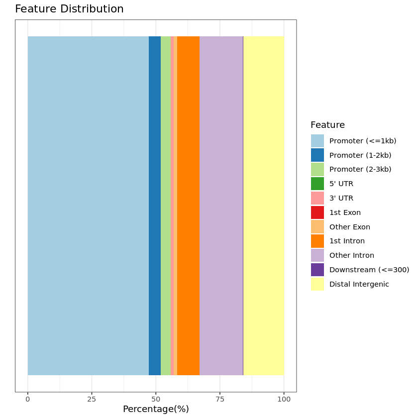
xxxxxxxxxxplotAnnoPie(diff_peak_anno)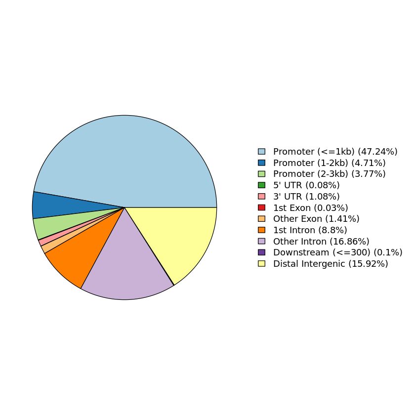
xxxxxxxxxxupsetplot(diff_peak_anno, vennpie=TRUE)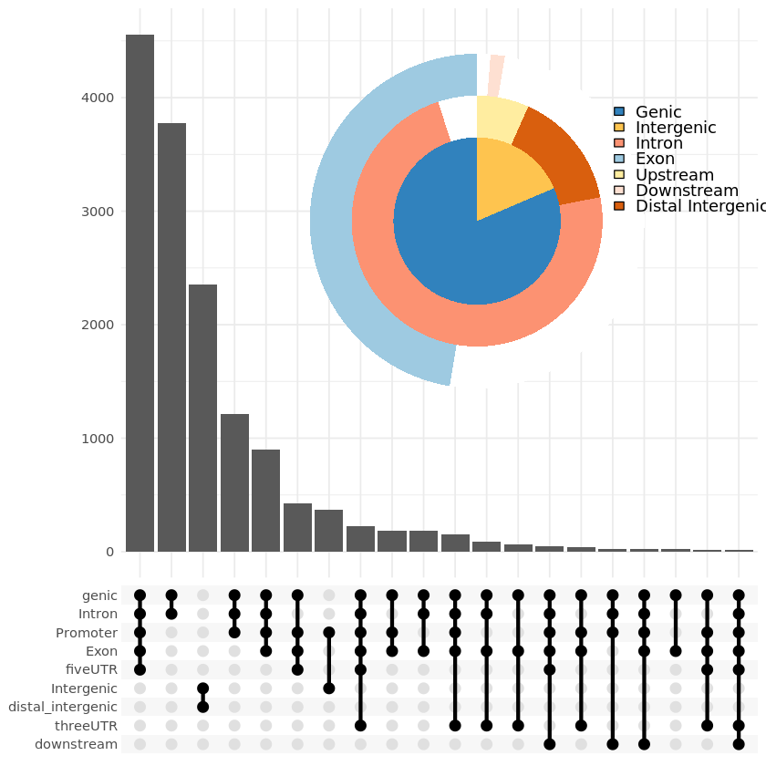
xxxxxxxxxxgene_ensemble_ids <- df_diff_peak[,"geneId"]gene_ensemble_ids <- unlist(str_split(gene_ensemble_ids,"[.]",simplify=T))[,1]mart_hsa=useMart("ensembl", "hsapiens_gene_ensembl")ensembl_entrez_IDs=getBM(attributes = c("ensembl_gene_id","entrezgene_id"), filters = "ensembl_gene_id", values = gene_ensemble_ids, mart = mart_hsa)head(ensembl_entrez_IDs)| ensembl_gene_id | entrezgene_id | |
|---|---|---|
| <chr> | <int> | |
| 1 | ENSG00000000457 | 57147 |
| 2 | ENSG00000001497 | 81887 |
| 3 | ENSG00000001626 | 1080 |
| 4 | ENSG00000002822 | 8379 |
| 5 | ENSG00000003147 | 3382 |
| 6 | ENSG00000003436 | 7035 |
xxxxxxxxxxgene_entrez_IDs = ensembl_entrez_IDs[,"entrezgene_id"]GO_enrich_result <- enrichGO(gene_entrez_IDs, keyType = "ENTREZID", OrgDb = org.Hs.eg.db, ont = "BP", pAdjustMethod = "BH", qvalueCutoff = 0.05, readable = FALSE)head(GO_enrich_result)dotplot(GO_enrich_result, showCategory=20)| ID | Description | GeneRatio | BgRatio | pvalue | p.adjust | qvalue | geneID | Count |
|---|---|---|---|---|---|---|---|---|
| GO:0061564 | axon development | 253/6465 | 490/18903 | 7.563156e-16 | 4.887311e-12 | 3.674101e-12 | 2115/5080/2534/22902/1272/6683/7414/7204/999/3371/1495/1496/2011/2736/10371/5362/4133/4983/1785/54437/2932/10890/4313/393/1947/4897/57556/1808/3717/79006/9253/1954/5864/5764/5803/2737/3984/8153/113246/10090/6722/150465/57142/10494/6654/7143/4548/23271/8828/1385/8609/63923/1959/84612/1948/7408/23499/2258/9201/2048/10752/4038/9315/10505/64855/658/3480/1009/351/10500/1944/91653/27242/26230/4915/4851/4684/4929/223117/64221/2047/3798/7074/27020/26053/2909/8997/6285/27185/23114/5364/836/22853/1020/57611/2637/54910/1942/25942/5747/214/9723/9637/1605/9024/10458/57453/3725/9378/575/8633/56963/2131/2049/83999/1946/6092/10509/5727/1630/10507/64218/2917/84628/2050/6477/3908/104/9860/91584/10381/23129/3475/65078/3918/2263/10512/60/23011/334/57549/10013/25/8829/706/9252/655/80208/23242/219699/7422/1627/10675/3925/6794/9499/5354/23767/1123/59352/8650/2045/347733/10939/126147/29956/79805/57689/9638/3688/288/7070/7345/89780/55740/7476/56896/57465/4009/80128/4825/107/26050/5979/4218/3800/6091/1000/8941/65059/1600/5797/8851/220202/5062/6585/4155/4914/659/115557/11344/23077/6792/9369/2896/2042/5588/1400/9175/7155/5063/285220/55118/4858/5802/5818/3676/2043/85440/9331/1268/89884/6049/4131/27255/5879/9856/2064/152330/2044/4781/9344/53942/85458/6469/322/81565/10678/3799/4135/391/1002/25987/5454/23768/84631/23390/2316/23303/51062/26128/79600/1945 | 253 |
| GO:0010975 | regulation of neuron projection development | 232/6465 | 446/18903 | 4.186521e-15 | 1.352665e-11 | 1.016884e-11 | 6376/2534/22902/1272/999/23327/816/1608/1496/25791/5526/2011/10371/5362/4133/54437/2932/393/4897/57556/25793/65009/79006/84079/1954/2931/5764/2146/3984/23189/2889/8153/5376/10090/5754/6722/1716/57142/10494/4780/5396/7143/5906/5997/23271/63923/2185/23363/64284/1948/23499/482/2258/2670/116983/2048/4038/10505/183/3706/57520/5530/3480/10498/10500/23557/5793/26230/4915/6911/6695/1601/5789/223117/23043/7074/27020/7804/8321/4690/2909/27185/10611/5364/1020/57611/54986/54910/4920/1942/9723/154141/9024/10458/56963/2049/83999/23258/1946/26039/6092/10509/1630/9863/10507/64218/84628/23237/9860/55714/91584/23072/8837/23129/3675/3475/29116/51188/65078/10512/23011/25/8829/1399/655/79791/11075/23242/54664/9693/10938/8724/7422/1627/64175/991/6794/5911/3397/1123/577/2045/153090/347733/950/29956/7436/57689/9638/2895/7070/89780/7476/56896/57465/1996/80128/5979/84879/6383/22871/6091/1000/26115/238/8507/10690/1600/386724/8851/220202/5062/6585/120892/4155/4914/659/51517/11344/1523/23077/6792/7431/2896/9820/2042/11178/387/1400/9175/5063/9139/9762/3655/5753/10084/6422/4858/5802/23413/23064/65981/59341/9896/55704/2043/4139/1268/440730/53335/6049/51657/547/4131/9856/8499/10300/81545/85458/114788/120114/81565/11141/4135/1002/2242/25987/5454/3066/2316/23303/26052 | 232 |
| GO:0007409 | axonogenesis | 228/6465 | 438/18903 | 6.540349e-15 | 1.408791e-11 | 1.059078e-11 | 2115/5080/2534/22902/1272/6683/7414/7204/999/1496/2011/2736/10371/5362/4133/4983/1785/54437/2932/10890/393/1947/4897/57556/1808/79006/9253/1954/5864/5803/2737/3984/8153/113246/10090/6722/150465/57142/10494/6654/7143/8828/1385/8609/63923/1959/84612/1948/7408/23499/2258/9201/2048/10752/4038/10505/64855/658/3480/1009/351/10500/1944/91653/26230/4915/4851/4684/4929/223117/64221/2047/3798/7074/27020/26053/2909/8997/6285/27185/23114/5364/22853/1020/57611/2637/54910/1942/25942/5747/214/9723/9637/1605/9024/10458/57453/9378/575/8633/2131/2049/1946/6092/10509/5727/1630/10507/64218/84628/2050/6477/3908/104/91584/10381/23129/3475/65078/3918/2263/10512/60/23011/334/57549/10013/25/8829/9252/655/80208/23242/219699/7422/1627/3925/6794/9499/23767/1123/59352/8650/2045/347733/10939/126147/57689/9638/3688/288/7070/7345/89780/55740/7476/56896/4009/80128/4825/107/26050/5979/4218/3800/6091/1000/8941/65059/1600/5797/8851/220202/5062/6585/4155/4914/659/115557/11344/23077/6792/9369/2042/5588/1400/9175/7155/5063/285220/4858/5802/5818/3676/2043/85440/9331/89884/6049/4131/27255/5879/9856/2064/152330/2044/4781/9344/53942/85458/6469/322/81565/10678/3799/4135/391/1002/25987/5454/23768/84631/23390/23303/51062/26128/79600/1945 | 228 |
| GO:0007163 | establishment or maintenance of cell polarity | 134/6465 | 234/18903 | 3.363283e-13 | 5.433383e-10 | 4.084618e-10 | 5080/22902/1495/4134/10758/10565/9886/2011/23332/4983/2932/10890/6548/23616/4627/23322/23094/23189/8729/8153/9368/1822/10090/5754/23286/51421/10494/2185/29899/84612/2258/10487/9826/23418/57710/10253/54509/3480/54828/4478/55691/667/162282/2047/389/2909/26086/4000/23122/154810/83700/7465/5747/25932/5881/9024/89958/7477/85302/10399/56603/286/5590/9948/64398/6624/60/1739/10615/55968/25/1399/81704/9267/9750/10096/1058/6794/154796/5908/1742/9475/1794/4752/55755/4926/81609/79648/9638/143098/3688/1740/51571/7476/55083/10252/4085/22836/3611/378/29984/9793/399687/3064/55742/5310/387/6093/23291/3993/64130/9124/56253/10486/23150/85440/23433/7010/2302/4131/5879/9585/11004/388/6993/2934/286204/146206/10092/253260/6469/81565/391/1639 | 134 |
| GO:0031589 | cell-substrate adhesion | 193/6465 | 369/18903 | 4.411831e-13 | 5.701850e-10 | 4.286442e-10 | 6376/7414/2824/10319/22998/10420/9448/23332/88/1785/2932/3693/6548/7301/3717/8174/8874/10391/3696/5054/23189/7016/23603/4739/6722/4811/9928/63923/10174/2185/4852/57580/6237/23499/8910/482/54453/5786/4221/967/3679/3915/51754/11117/1012/54828/3680/1295/5295/4851/51144/5795/1793/81792/2241/6695/1601/10461/2047/7074/246/7412/27185/23122/56999/79778/1020/83700/7059/1942/5747/59339/5881/3987/9723/5581/1605/3728/340485/811/2049/1946/4771/84628/1305/6281/916/2013/11037/3675/5590/87/55679/2192/1307/5829/151887/10580/25/8829/1399/11078/5155/6789/11151/26033/5467/7422/10675/27076/6239/3397/4289/9475/948/22801/4091/5861/3685/55435/10516/6904/8751/3688/10018/7070/1896/2039/2199/133584/158326/3611/4088/1613/2243/30008/29984/8322/91663/5613/71/613/81848/55966/3914/6714/55742/8861/402/3672/342184/3690/5310/2042/387/6093/8516/55604/54749/22798/3655/9647/182/6422/1021/1955/708/1277/604/57669/3694/3676/1490/7010/5328/3691/5879/8499/23671/6251/9344/7402/25890/123720/55698/3673/11170/8754/947/1435/5034/2316/407026 | 193 |
| GO:0022604 | regulation of cell morphogenesis | 167/6465 | 312/18903 | 1.354391e-12 | 1.458679e-09 | 1.096581e-09 | 2534/51177/23327/3074/816/9886/2011/5362/832/1785/4627/8874/84079/79784/23189/7016/8153/9368/23603/4739/64411/2185/989/23363/57580/57699/23499/57464/1729/10810/4628/2048/3679/3706/54509/7168/114804/8994/4651/30011/4478/2620/1793/1601/5789/389/7804/114793/2909/91010/5364/5747/5881/3987/9723/1605/10458/9699/811/55785/1946/26039/10507/64218/84628/56882/6281/23237/57194/91584/23129/9043/51188/6857/9948/55679/1739/2192/23011/23136/25805/25/8829/1399/11078/10627/11151/79791/59284/23268/7422/6678/1627/10675/7852/6239/4289/1742/55435/121512/93663/2768/226/2059/152273/3815/2039/2035/113251/57465/54751/10602/22836/3611/1613/84879/2243/57175/29984/8322/23580/91663/2147/116985/81848/643338/6714/55742/1523/3690/6792/9820/387/9175/5063/55604/708/152503/65981/2043/23433/53335/10672/23025/5879/57619/126374/85369/127833/388/221472/9203/221061/9344/10428/4343/50848/1857/11141/375611/391/2242/5071/5034/283149/2316/50618 | 167 |
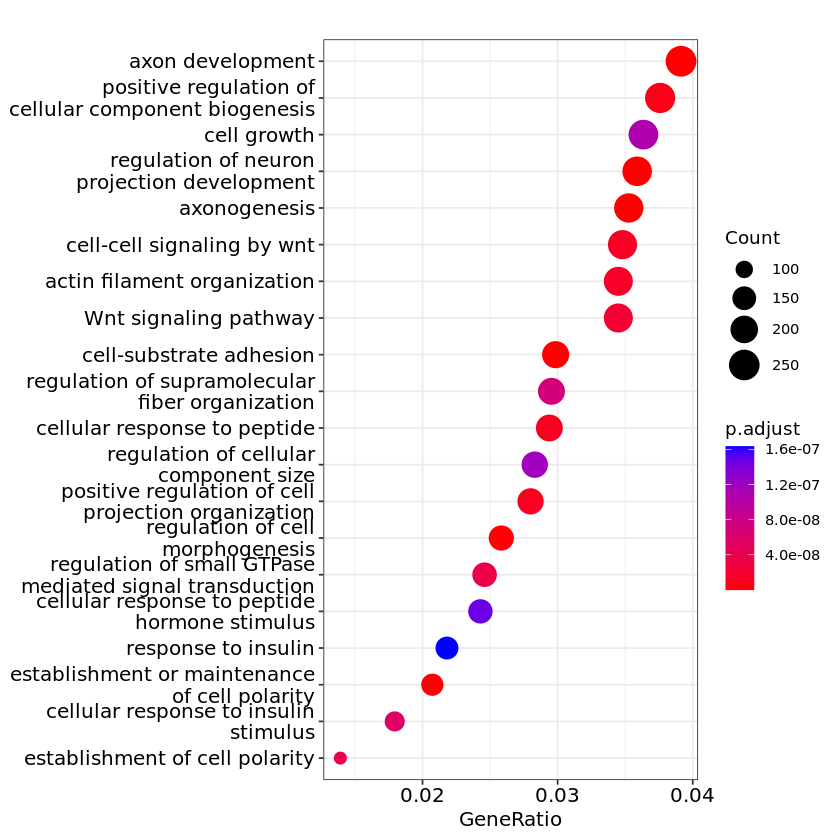
xxxxxxxxxxcomp_KEGG <- compareCluster(geneClusters=ensembl_entrez_IDs, fun = "enrichKEGG", organism = "hsa", pvalueCutoff = 0.05, pAdjustMethod = "BH")head(comp_KEGG)dotplot(comp_KEGG, showCategory = 15, title = "KEGG Pathway Enrichment Analysis")| Cluster | ID | Description | GeneRatio | BgRatio | pvalue | p.adjust | qvalue | geneID | Count | |
|---|---|---|---|---|---|---|---|---|---|---|
| 1 | entrezgene_id | hsa04510 | Focal adhesion | 119/3098 | 203/8393 | 1.729096e-10 | 5.757891e-08 | 4.022424e-08 | 2534/7414/3371/10319/4638/4660/2932/3693/208/5296/3696/93408/2889/1297/3910/7060/6654/7143/5906/63923/7408/5582/2002/1729/10451/2012/1284/3679/3915/1950/1280/3480/3680/5295/340156/1956/53358/1793/5578/2909/7410/6464/824/7059/5747/5881/3725/2885/3908/2013/3675/1298/9564/3918/4659/87/60/5829/1299/1399/5155/6655/10627/5595/858/7422/894/5908/2318/25759/9475/22801/56924/106821730/3685/1292/56034/3688/1293/3611/83660/5062/71/23396/3914/6714/55742/5500/3672/3690/5601/5923/387/6093/5063/8516/22798/3655/57144/857/1277/5602/4633/896/5159/3694/3676/8503/54776/3691/5156/5879/2064/7424/3673/5579/5293/5499/2316 | 119 |
| 2 | entrezgene_id | hsa04360 | Axon guidance | 104/3098 | 182/8393 | 1.670542e-08 | 2.781452e-06 | 1.943104e-06 | 2534/816/25791/10371/5362/54437/2932/54434/1947/57556/1808/5296/3984/2771/84612/1948/6237/2048/10505/658/5530/85464/10500/1944/91653/5295/223117/64221/5578/2047/4690/5364/1020/54910/1942/5747/5881/9723/8633/56963/2049/1946/6092/10509/5727/1630/10507/64218/84628/2050/23365/57522/9860/91584/5590/8440/10512/25/8829/4773/655/10627/5595/219699/5533/7852/5335/2770/9475/2045/56924/106821730/5998/57689/3688/55740/56896/84448/3611/6091/29984/5062/6585/6714/659/2042/2773/387/6093/5063/285220/3983/57144/2043/8503/5879/7220/2044/817/6469/1073/5293/2242/1945 | 104 |
| 3 | entrezgene_id | hsa04520 | Adherens junction | 60/3098 | 93/8393 | 5.251976e-08 | 5.829693e-06 | 4.072585e-06 | 9855/2534/6591/7414/999/1495/1496/2260/93408/7046/11235/5906/10810/6885/4008/3480/8826/1956/6934/5795/2241/7048/5881/57493/10458/5770/1500/87/60/10580/10627/5595/64750/117178/5908/9475/51176/83439/4088/5797/29119/71/6714/283106/1387/7454/387/6093/51701/54922/5818/4633/8936/6615/5879/2064/55698/10163/3643/25945 | 60 |
| 4 | entrezgene_id | hsa04810 | Regulation of actin cytoskeleton | 123/3098 | 229/8393 | 1.158077e-07 | 9.640992e-06 | 6.735133e-06 | 7414/4638/9138/4660/2260/3693/54434/6548/4627/8874/208/79784/5296/3696/93408/653857/3984/2246/6654/6237/1729/1131/4628/10451/324/3679/50649/1950/81624/8826/85464/3680/5295/340156/1956/4478/1793/5305/7074/2909/7410/5747/5881/10458/221178/23365/3675/9564/4659/2263/87/60/5829/1399/5155/6655/10627/5595/727/10096/7852/22800/9475/22801/56924/106821730/3685/2250/56034/2768/3688/55740/375189/2147/5062/71/23396/6714/5500/3672/10552/3690/732/26999/10787/387/6093/27006/5063/8516/369/3655/57144/28984/4633/8936/5159/200576/3694/3676/10297/8503/10672/54776/9459/10095/3691/5156/5879/1730/2934/22808/10163/10092/3673/1073/1128/5293/55970/5499/1132/2149/7114 | 123 |
| 5 | entrezgene_id | hsa04012 | ErbB signaling pathway | 53/3098 | 85/8393 | 1.527770e-06 | 1.017495e-04 | 7.108152e-05 | 816/2932/208/5296/2549/1839/868/6654/5582/2002/4609/1950/5295/1956/53358/5578/4690/6464/7039/5747/3725/2885/2475/8440/25/1399/6655/5595/374/5335/25759/56924/106821730/3084/9542/6777/2066/5062/6714/5601/2065/5063/369/57144/5602/8503/1026/2064/817/5579/5293/685/1978 | 53 |
| 6 | entrezgene_id | hsa05231 | Choline metabolism in cancer | 59/3098 | 98/8393 | 2.121613e-06 | 1.177495e-04 | 8.225905e-05 | 1608/23446/1120/208/5296/6009/6654/5582/10810/1950/126969/5295/1956/5578/9162/5900/5130/8613/5881/3725/2885/6583/2475/1606/8611/5155/6655/5595/6582/5335/57153/204962/56034/2353/23396/7454/5601/5337/3091/9468/160851/5602/1119/8936/5159/8503/5338/5156/5879/1607/8525/8526/10163/5579/5293/6667/1978/123745/6584 | 59 |
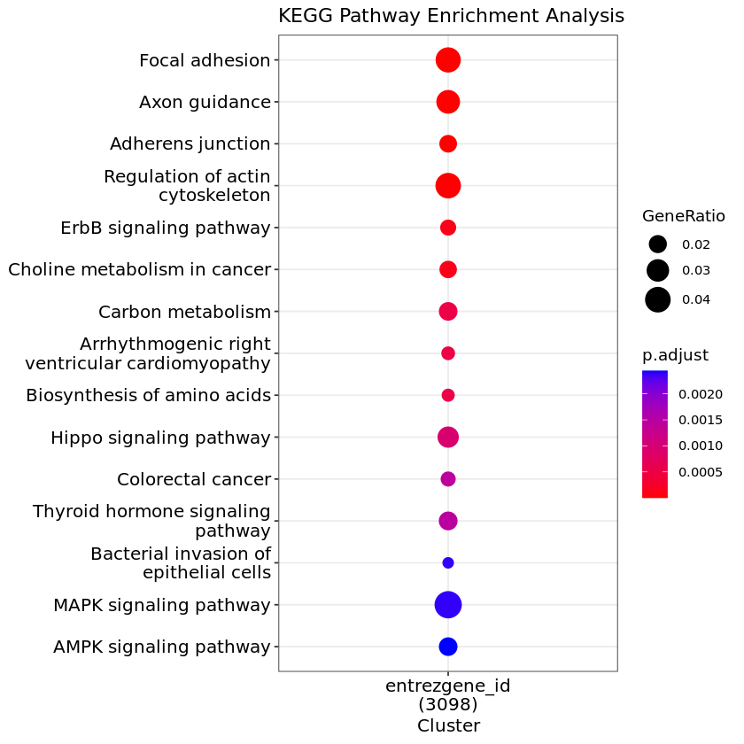
xxxxxxxxxxpb_gene = "SMARCA4" # The perturbed genediff_footprint = read.csv("./id-3_SMARCA4_BT869_diff_footprint.csv",head=TRUE)diff_tf = diff_footprint["tf"]diff_tf = rbind(diff_tf, pb_gene)# String processing for subsequent TF matchesdiff_tf[,"tf"] <- str_replace_all(diff_tf[,"tf"],"\\((.*?)\\)","")diff_tf_adjust = diff_tfn_rows = nrow(diff_tf)for(i in n_rows:1) { split_strs_1 = strsplit(diff_tf[i,"tf"], '::') if (length(split_strs_1[[1]])>=2) { diff_tf_adjust = as.data.frame(diff_tf_adjust[-i,]) for(j in 1:length(split_strs_1[[1]])){ diff_tf_adjust = rbind(diff_tf_adjust, split_strs_1[[1]][j]) } }}diff_tf_adjust = data.frame(diff_tf_adjust[!duplicated(diff_tf_adjust), ])colnames(diff_tf_adjust) <- c("tf")diff_tf = diff_tf_adjustxxxxxxxxxxstring_db <- STRINGdb$new( version="11.5", species=9606, score_threshold=400, input_directory="")data_mapped <- diff_tf %>% string_db$map(my_data_frame_id_col_names = "tf", removeUnmappedRows = TRUE)as.ggplot(~string_db$plot_network(data_mapped$STRING_id)) + ggtitle("The perturbed gene: SMARCA4") + theme(plot.title = element_text(hjust = 0.5))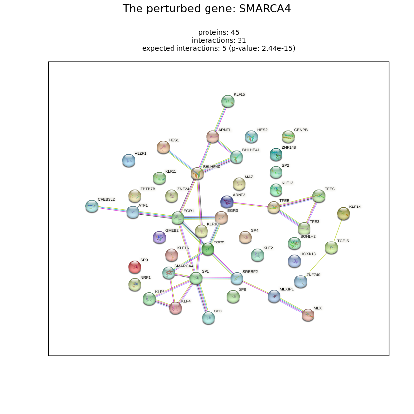
xxxxxxxxxxclusters_list <- string_db$get_clusters(string_ids = data_mapped$STRING_id , algorithm = "fastgreedy" ) for(i in 1:6){ clusters_plots =as.ggplot(~string_db$plot_network(clusters_list[[i]])) ggsave(plot = clusters_plots,paste("./plots/PPIN_cluster",i,".png",sep = ""), units="in", dpi=200, device="png",bg = "white")}image_read("./plots/PPIN_cluster1.png")image_read("./plots/PPIN_cluster2.png")image_read("./plots/PPIN_cluster3.png")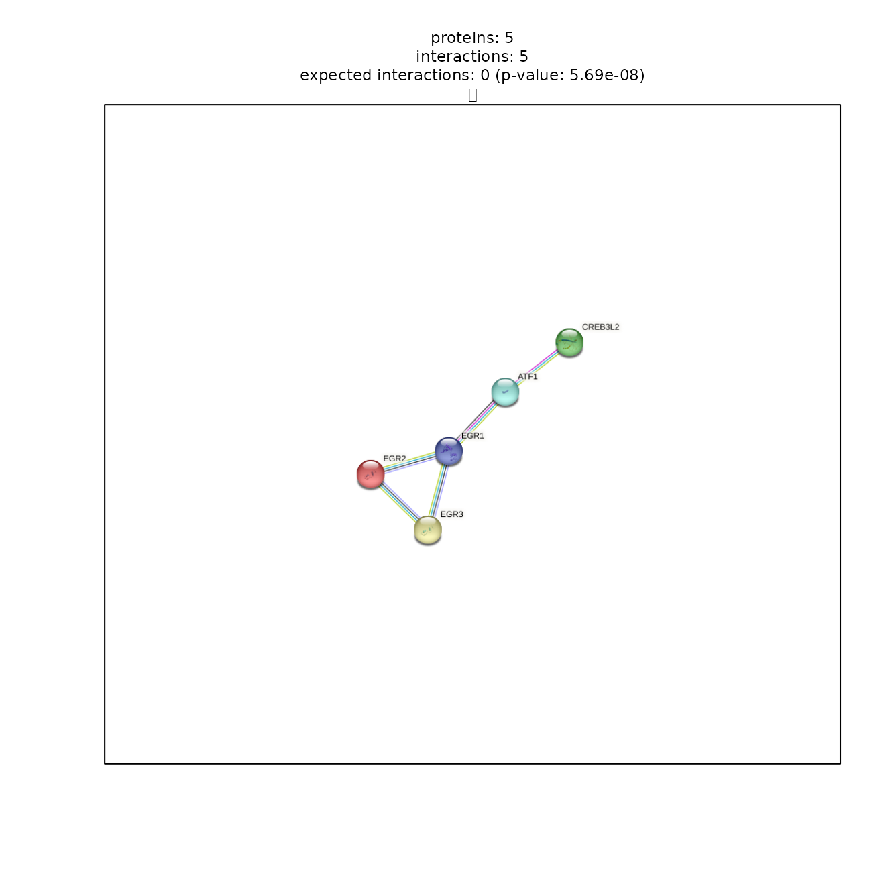
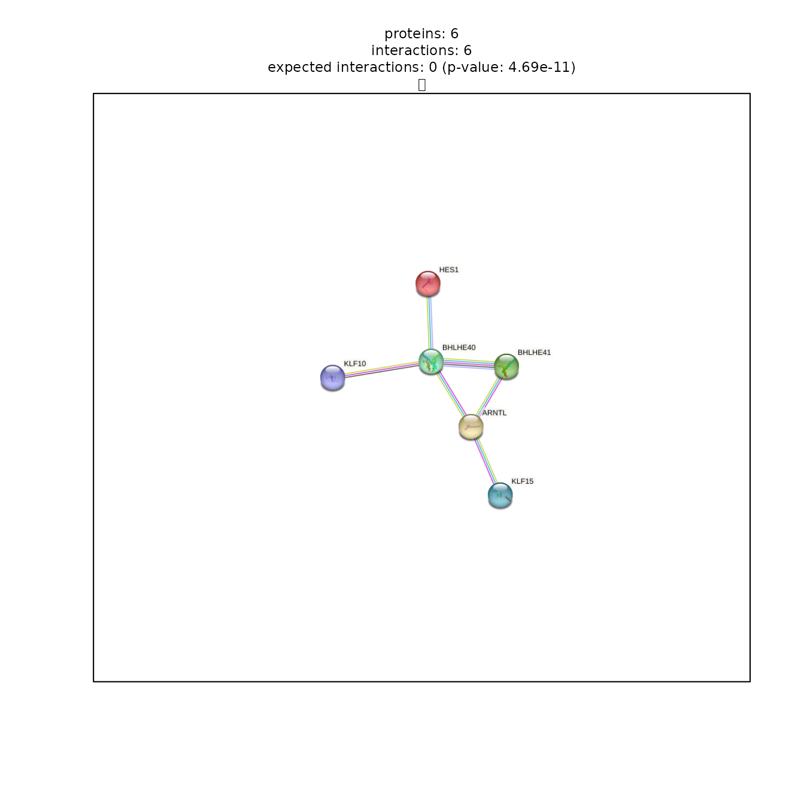
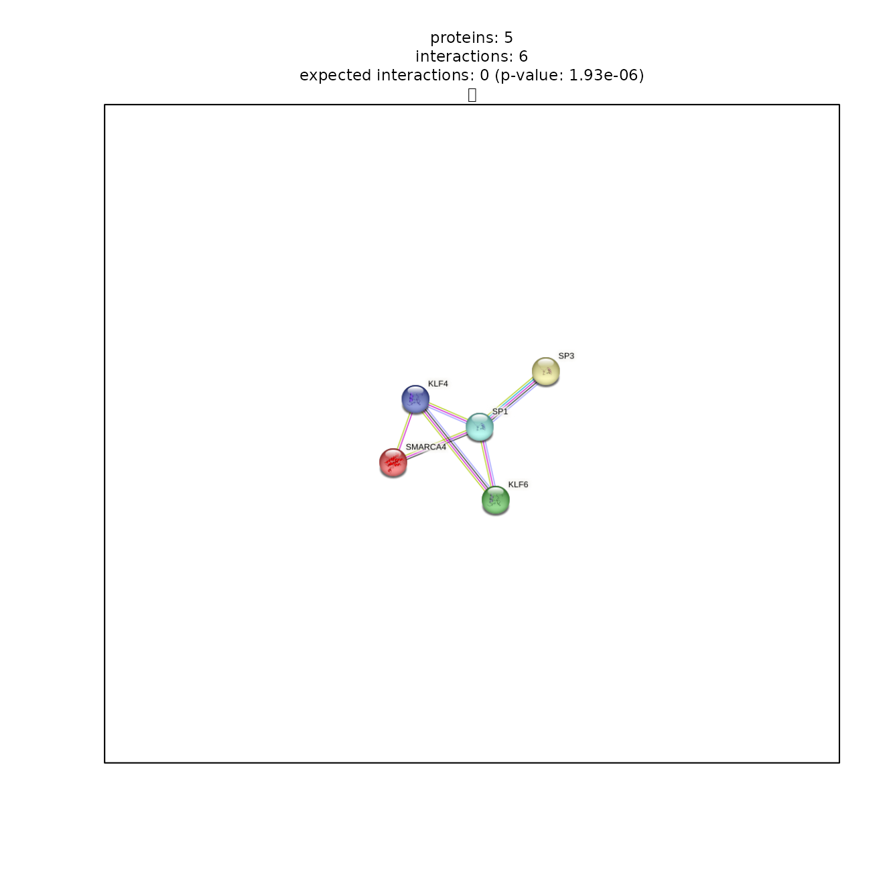
xxxxxxxxxxdata_links <- data_mapped$STRING_id[1:100] %>% string_db$get_interactions()links <- data_links %>% mutate(from = data_mapped[match(from, data_mapped$STRING_id), "tf"]) %>% mutate(to = data_mapped[match(to, data_mapped$STRING_id), "tf"]) %>% dplyr::select(from, to , last_col()) %>% dplyr::rename(weight = combined_score)links <- links %>% mutate(from_c = count(., from)$n[match(from, count(., from)$from)]) %>% mutate(to_c = count(., to)$n[match(to, count(., to)$to)]) %>% filter(!(from_c == 1 & to_c == 1)) %>% dplyr::select(1,2,3)nodes <- links %>% { data.frame(gene = c(.$from, .$to)) } %>% distinct()net <- igraph::graph_from_data_frame(d=links,vertices=nodes,directed = F)igraph::V(net)$deg <- igraph::degree(net)igraph::V(net)$size <- igraph::degree(net)/5igraph::E(net)$width <- igraph::E(net)$weight/10ggraph(net,layout = "kk")+ geom_edge_fan(aes(edge_width=width), color = "lightblue", show.legend = F)+ geom_node_point(aes(size=size), color="orange", alpha=0.7)+ geom_node_text(aes(filter=deg>5, label=name),repel = T)+ scale_edge_width(range = c(0.2,1))+ scale_size_continuous(range = c(1,10) )+ theme_graph() + ggtitle("The perturbed gene: SMARCA4") + theme(plot.title = element_text(hjust = 0.5))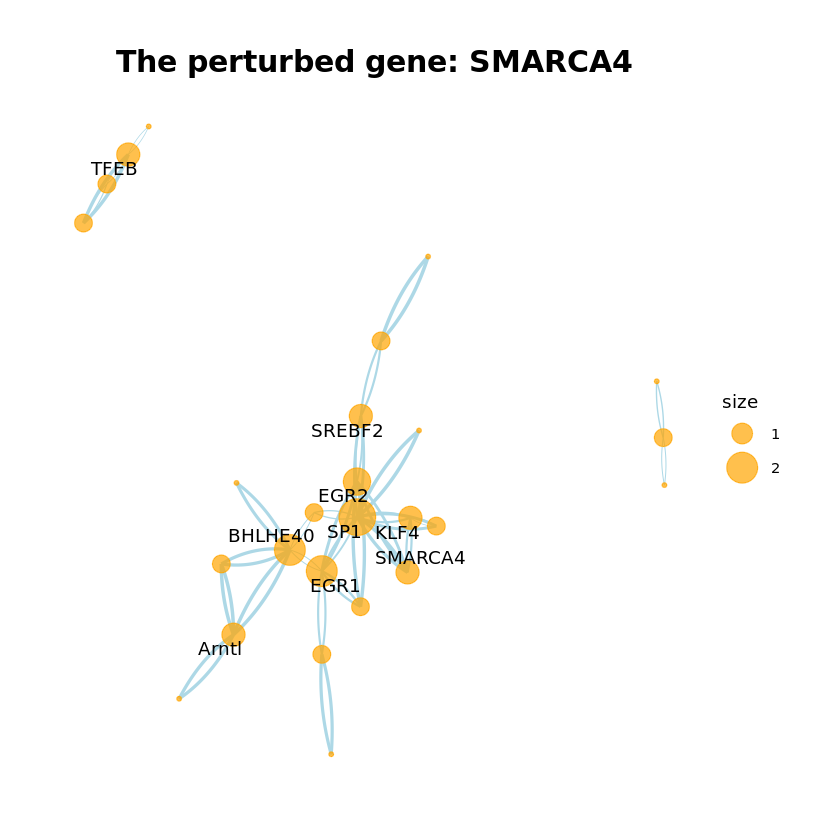